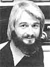

New Directions Radio
Obtaining a ham radio license
By Copthorne Macdonald
May/June 1980
Lots of folks promise themselves that they're going to get a ham license-someday-and then never quite get around to doing anything toward achieving that goal. Well, you might be surprised to know that it isn't at all difficult to become a licensed radio operator. In fact, I'm going to tell you everything you need to know to prepare for obtaining your permit . . . right in this month's column!
There are five classes of licenses (ranging from beginner to expert) awarded by the Federal Communications Commission to radio amateurs in the U.S. (see the table that accompanies this column). A license-for any of those ham classes-is earned by passing a Morse code exam, plus a written test on FCC rules and radio theory. The permits are free, good for a five-year term, and renewable at the end of that period. Of course, the licensing exams for the higher classifications are tougher than those required to earn a Novice license, but the operating privileges also increase accordingly. For example, Novices are restricted to the use of CW (continuous wave or Morse code) on the air, while operators who have General, Advanced, or Extra Class licenses may communicate by voice in the long distance bands. (Most hams receive their Novice certification first, and then use on-the-air, CW contacts with other amateurs to raise their Morse code speed to General Class requirements.)
BURNING THE MIDNIGHT OIL
The exams for a Novice Class license can be administered by any volunteer ham who's over 18 years of age, who isn't related to the applicant, and who holds a General Class (or higher) license. All upper-level exams are given by Federal Communications Commission officials. They are administered quite frequently in FCC offices in large cities, and several times a year in about 75 other North American towns.
To start your preparation for the exam, you can order free information on "hamming" from the American Radio Relay League (ARRL) ... which is the U.S. national ham organization. This group can also provide you with a list of its publications, addresses of ham clubs in your area, and a copy of the License Manual (for $4.00), which lists the current exam schedule and locations. Be sure to send a large, self-addressed, stamped envelope with your request for any material . . . and mail it to ARRL, Dept. TMEN, 225 Main Street, Newington, Connecticut 06111.
The League also offers a Novice Class study package called Tune In the World With HamRadio ($7.00 postpaid) which includes an excellent cassette tape-to teach you Morse code-and an illustrated book that's part study guide and part introduction to the world of ham radio. (Later on, if you progress to the General Class exam, you may want to order the ARRL Code Kit, priced at $8.00. This more advanced study unit includes two cassettes ... containing code practice material at speeds increasing from 5 to 13 words per minute.)
The firm that manufactures Heathkits is another good source of licensing exam study aids. The Heath Company sells two different learning programs (one for Novice and one for General Class). The kits aren't inexpensive, but they are incredibly thorough ... so much so, in fact, that Heath guarantees to refund your money if you don't pass the FCC exam after completing either course! (So-whether you pass or fail the Heath package might be well worth the extra investment it involves.) I've examined the Novice License program in detail and found that the code training is handled by the same excellent cassette provided in ARRL's material. In addition, the Heath package includes nine modules of programmed instruction-as preparation for the written exam-which cover subjects such as FCC rules and regulations, basic electrical principles, and circuit components. The programs' careful, step-by-step format actively involves the student in the material . . . so the information tends to sink in easily and painlessly. You can get the Novice study kit (priced at $34.95) or the General Class edition (for $49.95)-or just order a free catalog-from the Heath Company, Dept. TMEN, Benton Harbor, Michigan 49022.
ALTERNATIVES TO "BOOK LEARNING"
If you have trouble absorbing technical material out of a textbook-and feel that you'd learn more easily in a student/teacher situation-don't worry. Instead of using a study kit, you might be able to sign up for a ham license preparation course at a nearby vocational school or adult education center. Also, check to see whether there are any ham operators' clubs in your area . . . if so, you can probably arrange for some instruction from their members.
After you obtain your study materials, you'll need only one more item to help you prepare for your FCC exam . . . and that's a code practice oscillator. This handy training device-when used regularly-will help improve your ability to send code (as well as to receive and understand it). Heath offers such a unit-complete with telegraph key-in its Kit No. HD-1416, at a price of $10.95 . . . or you can buy an oscillator at Radio Shack (or just about any electronic outlet store).
That's about all you need to know to start working toward your amateur radio license! Of course, it'll take a lot of study and determination to prepare for (and to pass!) the test . . . but-once you have that valuable little piece of paper in hand that says you're a certified radio operator just think of the endless possibilities of communication that will be open to you. So .. . good luck with your licensing exams, and maybe we'll "meet" on the airwaves sometime in the future!
Peace,
Cop Macdonald (VE1 B FL)
P.O. Box 2941
Charlottetown
Prince Edward Island
Canada C1A 8C5
New Directions Radio is an international network of radio amateurs concerned with those ways of using ham radio (and related modes of communicating) that promote our own growth as individuals, and which we perceive as helping to create a more aware, more caring, and more responsible human society. We encourage all who share these interests to work with us. A current schedule of on-the-air activities is included in each issue of the bi-monthly New Directions Roundtable Newsletter published by Art Mourad (WB2P0B) as a service to the rest of us. To subscribe, send 25 cents for each issue desired to Art Mourad, P.O. Box 787, Bergenfield, New Jersey 07621.
|
 |
 |
|